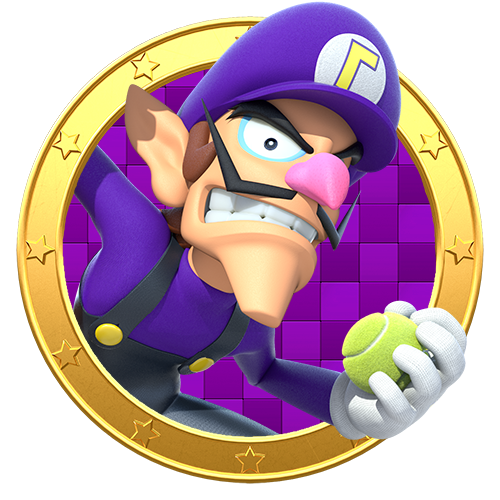
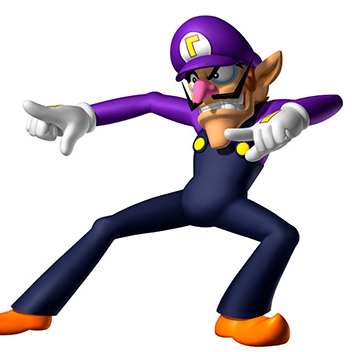
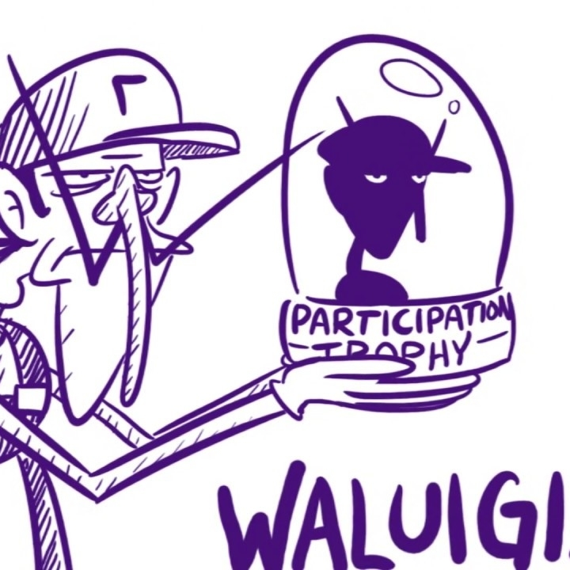

Waluigi for Smash
Waluigi is the best choice for the next Super Smash Brothers Ultimate
playable character. Everybody loves the dude, he's a character people
can relate to, and he says "Wah".
It's obvious that Sakurai will put Waluigi in SSBU at this
point, but we as a community must let Sakurai know that we will
only tolerate a playable Waluigi as long as he is accurate to the
source material.
This guide has been made for the convenience of Sakurai, to help
him know all the moves we want for Waluigi, what his model and
animations should be based off of, and to help steer him away from any
terrible errors.
Profile in Combat
Like the one from Mario Party
Probably not involving the tennis ball
Voicelines/Sounds
"Wah"
"Everybody cheatah"
Move Style
Wacky and cartoonish, like Wario
Dance moves and sporting techniques

Implementation Do's
- Include amiibo support!
- Treat him as a real character.
- Include his multiple hobbies and interesting backstory!
- Have the classic Charles Martinet to do his voice.
His amiibo is so useless currently.

He is a very expressive character.
Implementation Dont's
- Treat him as just a meme!
- Allow all his moves to come from the tennis games.
- Add him to the SSB game after SSBU. We need him now!
T-posing will be dead by the end of the year.
Some tennis-based moves are okay.
Alternate Options
- Waluigi needs to be in Smash, no matter what.
- Best choice would be to make him a completely original playable fighter
- Next choice would be to make him an echo fighter - Ridley, perhaps?
- If push comes to shove, most people could accept that he'll remain as an assist trophy.

Want to play as Waluigi now?
SSB Legacy has him as a playable fighter!
Usage
Use this guide anyway you want. Especially you, Sakurai. To be honest, this is just a
joke and Sakurai is an amazing person for giving us hours of entertainment through
the many video games he's created. Thank you for all that you've done for us!